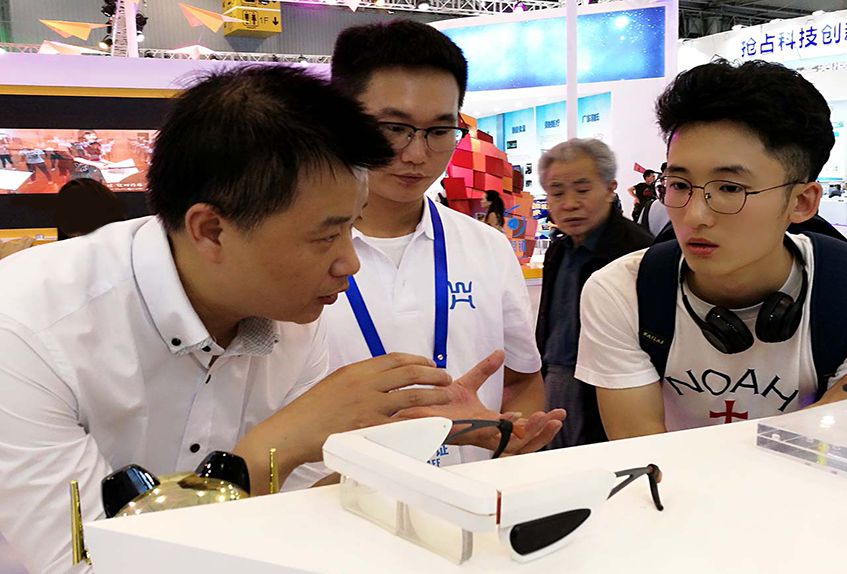

产品简介
给大脑装软件，帮眼球练瑜伽。 TK降度镜是基于云计算/大数据技术，融合了“大脑影像处理能力及可塑性和眼球处理像差”的全新高科技产品。 产品便于携带，可进行智能视觉训练。客户坚持使用该产品，3-6个月重建视觉健康，恢复裸眼视力，稳定达到1.0，还你一个崭新的视界。
产品功能
智能: 替代矫正眼镜的同时，多功能、智能化,便捷,时尚；
安全: 非手术、非接触式、无损伤性，是健康安全有效纯物理矫正治疗方式；
有效: 3-6个月可实现80%的使用人群裸眼视力恢复到1.0，真正做到彻底摘镜；
广泛: 适用人群范围广泛，真正做到一机多用。
唯一性:全球首创专利技术，独一无二。
产品体验
真实的客户体验
